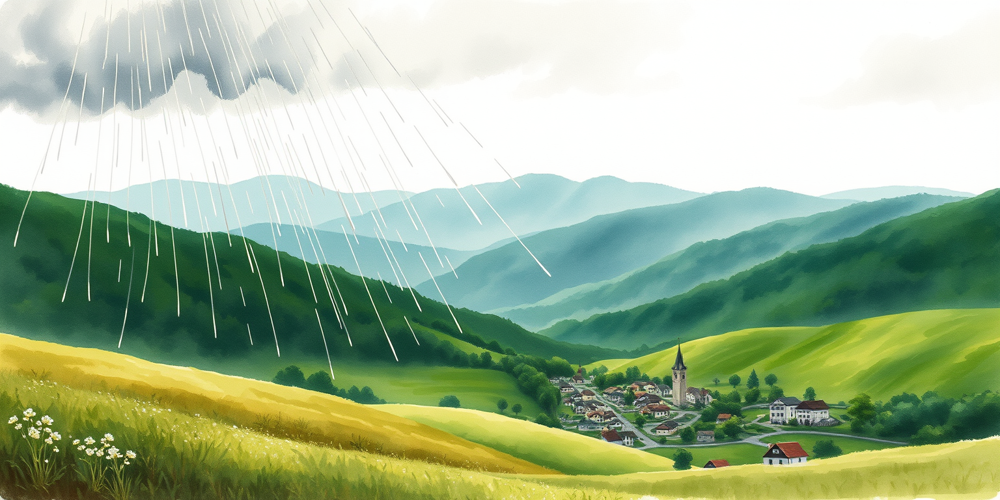

The map fills in as you explore. Where do the “?” trails lead?
Special journeys earn special badges!
Collect a stamp from every place your drop visits!
An interactive water cycle adventure for first graders — and the grown-ups reading along.
Today you get to ride the water cycle. Fall as rain, race down rivers, hide underground, visit a kitchen sink, and float back to the clouds. Twenty illustrated scenes, real facts on every page, a read-aloud button for pre-readers, and a journal that fills in as you wander. Tap the glowing circles to look closer, and choose where your drop goes next!
A project by Owen Wang · more projects